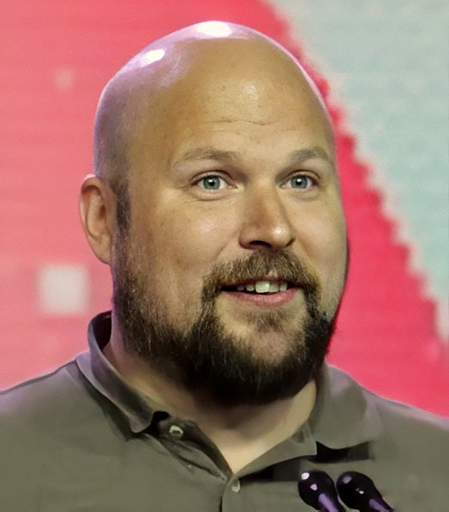

| Developer | Beschrijving | Afbeelding |
|---|---|---|
| Markus Persson | Markus Persson is de originele maker van de game.
Hij is weggegaan bij het bedrijf in september 2014 toen Mojang Studios werd gekocht door Microsoft. Hij was dus de eigenaar van minecraft voor ongeveer 4 jaar. Marcus Persson heeft de eerste versie van minecraft gemaakt in 6 dagen en heeft geholpen met updates tot 2014 toen hij Minecraft verkocht aan microsoft |
 |